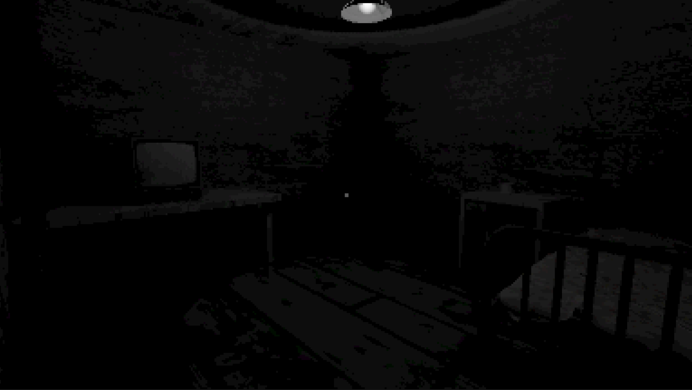

How Horror Games Influenced Me
Horror games have been a strong influence on me, as I want to make them myself. I have started creating horror games, and I am getting better at it.
Here is a screenshot of a horror game I am working on

Types of horror game
Do you like horror games?
Home
Why horror games exist